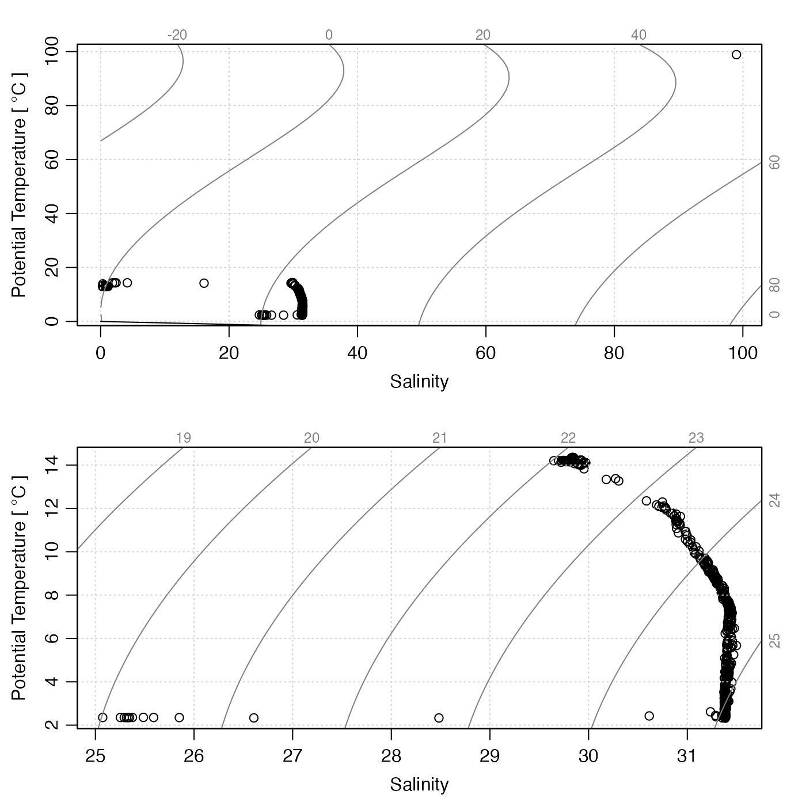

This function changes specified entries in the data-quality
flags of a ctd object, which are stored within
a list named flags that resides in the metadata
slot. If the object already has a flag set up for name,
then only the specified entries are altered. If not, the flag
entry is first created and its entries set to default,
after which the entries specified by i
are changed to value.
The specification is made with i, the form of which
is determined by the data item in question. Generally,
the rules are as follows:
If the data item is a vector, then
imust be (a) an integer vector specifying indices to be set tovalue, (b) a logical vector of length matching the data item, withTRUEmeaning to set the flag tovalue, or (c) a function that takes anoceobject as its single argument, and returns a vector in either of the forms just described.If the data item is an array, then
imust be (a) a data frame of integers whose rows specify spots to change (where the number of columns matches the number of dimensions of the data item), (b) a logical array that has dimension equal to that of the data item, or (c) a function that takes anoceobject as its single input and returns such a data frame or array.
See “Details” for the particular case of ctd objects.
Arguments
- object
An oce object.
- name
Character string indicating the name of the variable to be flagged. If this variable is not contained in the object's
dataslot, an error is reported.- i
Indication of where to insert the flags; see “Description” for general rules and “Details” for rules for ctd objects.
- value
The value to be inserted in the flag.
- debug
Integer set to 0 for quiet action or to 1 for some debugging.
Details
Since all the entries in the data slot of ctd objects are vectors, i must be a vector (either logical as in Example 1 or integer as in Example 2), or a function taking a ctd object and returning such a vector (see “Indexing rules”).
Sample of Usage
# Example 2: Interactive flag assignment based on TS plot, using
# WHP scheme to define 'acceptable' and 'bad' codes
options(eos="gsw")
data(ctd)
qc <- ctd
qc <- initializeFlagScheme(qc, "WHP CTD")
qc <- initializeFlags(qc, "salinity", 2)
Sspan <- diff(range(qc[["SA"]]))
Tspan <- diff(range(qc[["CT"]]))
n <- length(qc[["SA"]])
par(mfrow=c(1, 1))
plotTS(qc, type="o")
message("Click on bad points; quit by clicking to right of plot")
for (i in seq_len(n)) {
xy <- locator(1)
if (xy$x > par("usr")[2])
break
i <- which.min(abs(qc[["SA"]] - xy$x)/Sspan + abs(qc[["CT"]] - xy$y)/Tspan)
qc <- setFlags(qc, "salinity", i=i, value=4)
qc <- handleFlags(qc, flags=list(salinity=4))
plotTS(qc, type="o")
}See also
Other functions relating to data-quality flags:
defaultFlags(),
handleFlags(),
handleFlags,adp-method,
handleFlags,argo-method,
handleFlags,ctd-method,
handleFlags,oce-method,
handleFlags,section-method,
initializeFlagScheme(),
initializeFlagScheme,ctd-method,
initializeFlagScheme,oce-method,
initializeFlagScheme,section-method,
initializeFlagSchemeInternal(),
initializeFlags(),
initializeFlags,adp-method,
initializeFlags,oce-method,
initializeFlagsInternal(),
setFlags(),
setFlags,adp-method,
setFlags,oce-method
Other things related to ctd data:
CTD_BCD2014666_008_1_DN.ODF.gz,
[[,ctd-method,
[[<-,ctd-method,
argo2ctd(),
as.ctd(),
cnvName2oceName(),
ctd,
ctd-class,
ctd.cnv.gz,
ctdDecimate(),
ctdFindProfiles(),
ctdFindProfilesRBR(),
ctdRaw,
ctdRepair(),
ctdTrim(),
ctd_aml_type1.csv.gz,
ctd_aml_type3.csv.gz,
d200321-001.ctd.gz,
d201211_0011.cnv.gz,
handleFlags,ctd-method,
initialize,ctd-method,
initializeFlagScheme,ctd-method,
oceNames2whpNames(),
oceUnits2whpUnits(),
plot,ctd-method,
plotProfile(),
plotScan(),
plotTS(),
read.ctd(),
read.ctd.aml(),
read.ctd.itp(),
read.ctd.odf(),
read.ctd.odv(),
read.ctd.saiv(),
read.ctd.sbe(),
read.ctd.ssda(),
read.ctd.woce(),
read.ctd.woce.other(),
subset,ctd-method,
summary,ctd-method,
woceNames2oceNames(),
woceUnit2oceUnit(),
write.ctd()
Examples
library(oce)
# Example 1: Range-check salinity
data(ctdRaw)
# Salinity and temperature range checks
qc <- ctdRaw
# Initialize flags to 2, meaning good data in the default
# scheme for handleFlags(ctd).
qc <- initializeFlags(qc, "salinity", 2)
qc <- initializeFlags(qc, "temperature", 2)
# Flag bad salinities as 4
oddS <- with(qc[["data"]], salinity < 25 | 40 < salinity)
qc <- setFlags(qc, name = "salinity", i = oddS, value = 4)
# Flag bad temperatures as 4
oddT <- with(qc[["data"]], temperature < -2 | 40 < temperature)
qc <- setFlags(qc, name = "temperature", i = oddT, value = 4)
# Compare results in TS space
par(mfrow = c(2, 1))
plotTS(ctdRaw)
plotTS(handleFlags(qc, flags = c(1, 3:9)))
